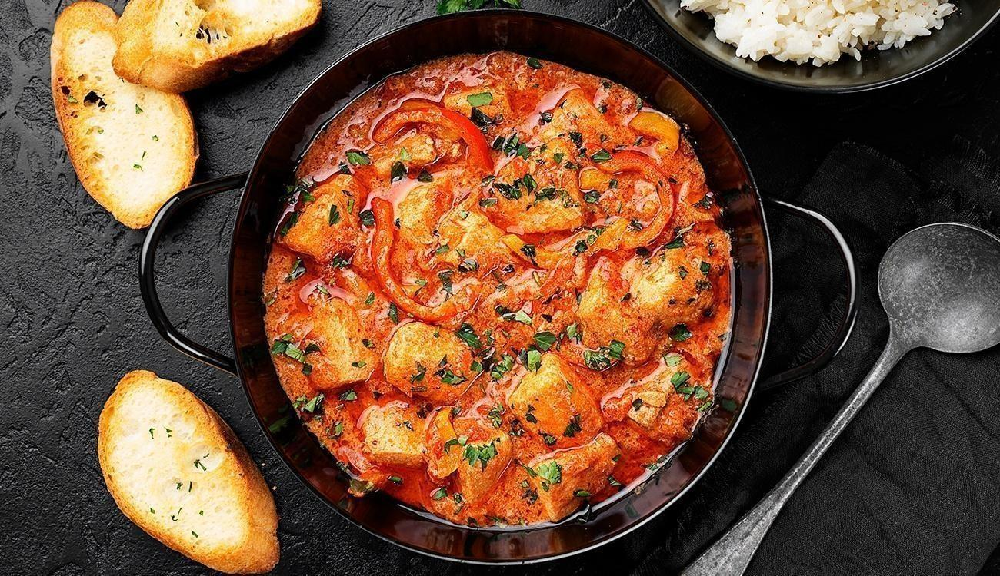

Moqueca

What is moqueca?
Moqueca is a stew, usually based on fish and/or seafood, seasoned with various herbs and peppers. This dish has many variations that use coconut milk, dendê oil (palm oil), jambu, coriander, urucum (annatto seeds), and others.
The origin of Brazilian Moqueca
Moqueca is a dish that uniquely expresses the various cultures that formed the Brazilian people. Its origin is the result of indigenous, African, and Portuguese influences, mixing techniques and ingredients from several continents in an authentically national dish.
Source:Food'n Road
Ingredients
- Cod fish
- Lime juice
- Salt and freshly ground black pepper
- Olive oil
- GArlic cloves
- Peppers
- Diced tomatoes
- Onion
- Fresh herbs
- Coriander
- Coconut milk
- Tomato paste
Steps
- Place fish in a large glass bowl and season with salt, pepper and lime juice. Set aside in the fridge for about 15 minutes.
- In a large Dutch oven pot (or clay pot), add 2 tablespoon of olive oil over medium heat. Add the garlic and hot pepper and cook for about 1 minute.
- Spread diced tomatoes on the bottom of the pot.
- Then, add bell peppers and sliced onions.
- Add the fish fillets and cilantro, parsley and coriander on top. Season with a pinch of salt and pepper again.
- our the coconut milk and add tomato paste. Bring to a boil over medium-high heat. Then cover, lower the heat to a simmer and cook for 15 minutes, or until the onions are tender and the fish are fully cooked.
- Taste and adjust seasonings if desired. Garnish with chopped fresh cilantro and parsley. Serve with rice and salad.
Source:Primavera Kitchen
Back to Home